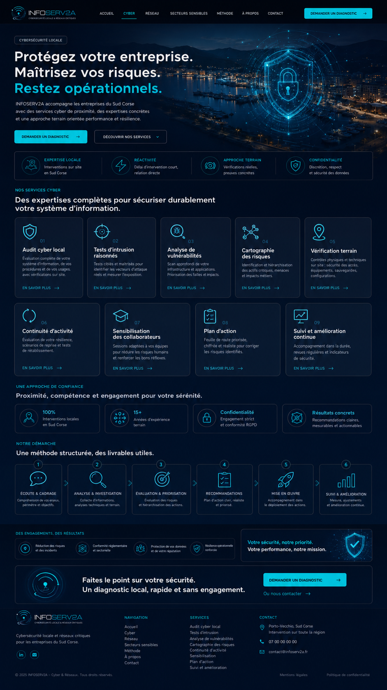

Audit cyber local
Évaluation complète de votre système d’information, de vos procédures et de vos usages, avec vérifications sur site.
En savoir plus
Cybersécurité locale
INFOSERV2A accompagne les entreprises du Sud Corse avec des services cyber de proximité, des expertises concrètes et une approche terrain orientée performance et résilience.
Nos services cyber
Évaluation complète de votre système d’information, de vos procédures et de vos usages, avec vérifications sur site.
En savoir plusTests ciblés et maîtrisés pour identifier les vecteurs d’attaque réels et mesurer l’exposition.
En savoir plusScan approfondi de votre infrastructure et applications. Priorisation des failles et impacts.
En savoir plusIdentification et hiérarchisation des actifs critiques, menaces et impacts métiers.
En savoir plusContrôles physiques et techniques sur site : sécurité des accès, équipements, sauvegardes, configurations.
En savoir plusÉvaluation de votre résilience, scénarios de reprise et tests de rétablissement.
En savoir plusSessions adaptées à vos équipes pour réduire les risques humains et renforcer les bons réflexes.
En savoir plusFeuille de route priorisée, chiffrée et réaliste pour corriger les risques identifiés.
En savoir plusAccompagnement dans la durée, revues régulières et indicateurs de sécurité.
En savoir plusUne approche de confiance
Notre démarche
Compréhension de vos enjeux, périmètre et objectifs.
Collecte d’informations, analyses techniques et terrain.
Évaluation des risques et hiérarchisation des actions.
Plan d’action clair, réaliste et priorisé.
Accompagnement dans le déploiement des actions.
Mesure, ajustements et amélioration continue.
Des engagements, des résultats
Un diagnostic local, rapide et sans engagement.